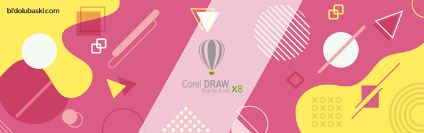

Tarihçe
SuperPaint (1973), en eski grafik yazılım uygulamalarından biriydi.
Fauve Matisse (daha sonra Macromedia xRes ),1990'ların başında,özellikle müşteri
yazılımında katmanları tanıtan öncü bir programdı. Şu anda Adobe Photoshop,Amerika'da en çok
kullanılan ve en iyi bilinen grafik programlarından biridir ve 1990'ların başında daha özel donanım
çözümleri oluşturmuştur, ancak başlangıçta çeşitli davalara konu olmuştur. GIMP,Adobe Photoshop'a popüler
bir açık kaynaklı alternatiftir .
Grafik Programı Nedir ?
İnsanların grafik yazılımı olarak düşündüğü, ancak yapmadığı yazılım, münferit görüntüleri doğrudan değiştirmeyen programlar içerir. InDesign, QuarkXpress ve Publisher gibi sayfa düzeni yazılımı bu kategoriye girer. Aynı şekilde, PowerPoint veya Apple Keynote gibi sunum yazılımı da grafik programı değildir. Genel olarak, ev yayıncılığı veya yaratıcı baskı yazılımı da bu duruma neden olmaz.
Günümüzün vazgeçilmez teknolojisi ile gelişen bilgisayar ve bilgisayar yazılım programları, kullanıcılar için pek çok alternatifi sunmaktadır. Bu alternatifler grubuna dahil olan grafik tasarım programları da bir kullanıcının özgür ve sınırı olmayan bir çok tasarımı, geliştirilebilir resimleri, tasarım animasyonu, çizim ve oluşturulmak istenen bir ürünün taslağı ve üç boyutlu görüntüleri gibi birçok çalışmanın profesyonel eller ile biçimlendirilerek hayat bulması olarak düşünülebilir.
Grafik tasarımın en başlıca özelliği, görselliğe dayanan bir iletişim unsuru olmasıdır. Bu iletişim, insanların dikkatini çeken, benimseten ve iyi bir tasarım gerçekleştirildiği zaman güven duygusunu, ürün ve hizmete dayalı olarak sağlayan grafik tasarımların sonuçlarında kendisini göstermektedir. İyi bir grafik tasarımı için, iyi bir program şarttır. Ayrıca bu programı destekleyecek ve çalışmasını sekteye uğratmayacak bir bilgisayarın donanım özellikleri de yapılan işin kalitesini ve verimini tetikleyecektir. Bugün internet üzerinde bir web, bir ürünün görsel çalışması, markası veya hayal üzerine kurulan sanatsal tüm içerikler normal günlük hayatımızda, grafik tasarım programları ihtiyacı gerektiren bir zorunluluk haline gelmiş bulunmaktadır.Grafik tasarım programının içerisinde, bir kullanıcının özgürce şekillendirebildiği, fakat belirli bir simetri, oran, karşıtlık ve ölçü durumlarına göre titizlikle dikkat ettiği bir dizi unsurları taşır. Bu açıdan kullanılacak grafik tasarım programı sayılıdır ve işlevleri birbirinden farklı olarak, kurulduğu yazılım altyapısına göre çeşitlilik gösterebilmektedir.
Grafik Programı Neden Kullanılır ?
İnsanların grafik yazılımlarını kullanarak dijital fotoğrafların düzenlenmesi ve paylaşılması, logoların oluşturulması, küçük resimlerin çizilmesi ve değiştirilmesi, dijital güzel sanatlar oluşturulması, web grafikleri oluşturulması, reklamlar ve ürün ambalajı tasarımı, taranan fotoğraflara dokunma ve harita çizme diğer diyagramlar 2
Photoshop'ta video düzenleme veya Illustrator'da 3B çizim gibi alışılmadık kullanımları vardır.
Grafik Programı Neden Gerekmektedir ?
Grafik tasarım, günümüze paralel olarak gelişen ve zorunlu bir ihtiyaca dönüşen küresel bir niteliğe sahip bir oluşumdur. Bilgisayar ve internet üzerinde yapılabileceklerin sınırının çok ötesine geçen, bir insanın hayal gücünü dilediği gibi özgürce kullanabildiği grafik tasarım programları sayesinde, elde edilmek istenen herşey gerçekleşebilmektedir. Yeni bir ürünün tasarımı, bir hayal gücünün gerçeğe dönüştürülmesi, animasyonlar, baskı gibi tüm herşey grafik tasarımı programları ile gerçekleşebilmektedir.
En iyi grafik tasarım programları için her ne kadar program mükemmel bir hizmet verse de, bir kullanıcı eğer onu kullanmayı bilmiyorsa program hiçbir verim sağlayamayacaktır. Bu yüzden bir tasarım yapılacağı zaman nasıl bir yol izleneceği önceden kestirilmeli ve nerede ne kullanılacağı kesin olarak kestirilmelidir. Bununla birlikte programın çok iyi bilinmesi ya da kullanabileceğiniz amaca yönelik bilinmesi size verim sağlaması için oldukça yardımcı olacaktır. Örnek olarak Adobe Photoshop (Ps) programında bildiğiniz gölgeleme, bir resim üzerine başka bir resmi eklediğinizde silikleştirerek sanki bir bütünmüş gibi bir kavram oluşturmayı biliyorsanız, yapacağınız tüm görsel çalışmalarında birşeyi bilmiş olarak birçok güçlü şeyleri ortaya çıkarabilirsiniz. Birde efektleri ve simetriyi doğru hesapladığınızda görüntünün üzerindeki oynamayı en aza düşürebilir ve orijinal bir görüntüye benzer bir hale getirebilirsiniz. Bunun gibi ufak şeyler bilindikçe bir program hakkında edindiğiniz bilgi ve oluşturmak istediğiniz tasarımın özelliği ve kalitesi de aynı oranda artacaktır. Bir grafik tasarım programı özellikler üzerine kuruludur. Bu özellikleri bir kullanıcı ne kadar biliyorsa gerçekleştirmek istediği tasarım üzerine çok daha kalıcı ve güçlü bir karşılık alabilecektir.
Bu açıdan ilk başlayanlar için grafik tasarımları için seçenekler bol ve geniştir. Kullanmak istediğiniz program üzerinde ne yapacağınızı bilin ve önceden yapılmış tasarım videolarını yada önerileri dikkate alarak adımınızı atın. Böylece daha sağlam bir temel üzerine öğrenebildiğiniz grafik tasarım programı üzerinde söz hakkı sizin üzerinizde olur ve gerçekleştirmek istediğiniz bir çalışmayı en mükemmel şekilde gerçekleştirerek profesyonel grafiker olabilirsiniz.
Bir grafik tasarım niçin gerektiği sorusunun tek cevabı günümüzün gelişen teknolojisi ve küreselleşen pazarın bu ihtiyacı doğurmasında yatmaktadır. Bu ihtiyacı gidermek üzerine bir grafik tasarımı öğrenmek istiyorsanız diğer herkesten bir seviye önde olabilmek için, sabırla ve yavaş yavaş bir grafik programı hakkında ince detayları kaçırmadan öğrenmenizde fayda vardır.
Grafik Programının Sağladığı Kolaylıklar
Günümüzde internet kullanıcıları ve grafik tasarımın sağladığı kolaylıkları sağlayan programlara ihtiyaç artmaktadır. Bu sebeple artan ihtiyaca olan talepte buna paralel olarak geliştiği için yakın bir zamanda herkes tarafından bilgisayar kullanmak kadar basit bir hale gelecektir. Tabi geleceğin ne getireceği ve şuan bildiğimiz programlardan daha nasıl bir üst seviyeye çıkacağını bilememekteyiz. Yine de grafik tasarımlarının bizlere sağladığı kolaylıkları bilmek, günümüzde oldukça revaçta ve bir iş bulabilme imkanı bakımından oldukça önemlidir.
3
Artan bu ihtiyacı en iyi şekilde yerine getirebilmek için çağımızın yenileşme ve gelişimlerini takip etmek oldukça önemlidir. Bu sayede yeni bir tasarımla çığır açılabilir, yeni bir tasarımla beklenilenin çok üzerinde bir kalite elde edilebilir. Tüm bunların ana kaynağı, bir grafikerliği severek ve isteyerek yapmaktan geçmektedir. Hedeflenen bir amaca yönelik geleceğini bunun üzerine kurgulayan kişiler için en önemli unsur araştırmayı, yeniliği sürekli takip etmesiyle olmaktır.
Grafik Tasarımı Programlarının Temel Özellikleri
Tüm grafik tasarımı programları belirli bir amaç için, kullanıcıların isteklerine göre tasarımlarını, hayallerini, düşüncelerini ve bir iş amacıyla gerçekleştirmek istediği projeleri bu yardımcı programlar ile sağlanması, gelişen teknolojinin bir kısmını yansıtmaktadır. Bir grafik tasarım programı ile bir kullanıcı düşüncelerini sanal ortamda gerçeğe dönüştürebilir, oluşturmak istediği bir dünyayı sanal ortamda grafik tasarım programları sayesinde gerçekleştirebilir. Bir firma ürünleri için, bir reklam veya katalog için pazar payında daha iyi yer edinebilmek amacıyla bu grafik tasarımlarını yapan kullanıcılara ihtiyaç duyar. İnternet ortamındaki rekabet, diğer firmalardan daha iyi olabilmek ve günümüzün zorunlu ihtiyacı haline gelen internet reklamcılığı için, bu programlara ve tasarımlarına ihtiyaç vardır.
Kişisel zevkler veya iş amacıyla olursa olsun belirtilen bu programlar küresel çapta en çok tercih edilen ve kullanılan programlardır. Bu grafik tasarımlarından bazılarını profesyoneller, bazılarını da yeni başlayanlar kullanabilmektedir.
Grafik Programları Çeşitleri Nelerdir ?
Grafik programlarının iki ana kategorisi piksel tabanlı görüntü editörleri ve vektör tabanlı görüntü editörleridir.
Piksel Tabanlı Görüntü Editörü
Günümüzde dijital görüntü işleme tekniklerinin gelişmesinin bir sonucu olarak, arazi örtüsünün/kullanımının uydu görüntülerinden çıkarımı için çeşitli yöntemlerkullanılmaktadır. Piksel tabanlı sınıflandırma bu yöntemlerimen başta geleni olmasına rağmen son yıllarda uydu görüntülerinin mekansal çözünürlüklerinin artmasının da bir sonucu olarak nesne tabanlı sınıflandırma yöntemide etkin olarak kullanılmaktadır. Bu çalışma kapsamındayüksek mekansal çözünürlüklü IKONOS görüntüsü kullanılarak bu iki yöntem karşılaştırılmıştır. Piksel tabanlı sınıflandırma sadece piksellerin istatistiksel analizine dayandığından, pikselleri segmentasyon aşamasında gruplandırarak bu segmentlerin renk, sıklık ve komşuluk gibi birçok özelliğini kullanan nesne tabanlı sınıflandırmayöntemitematiksınıf için daha anlamlı ve olumlu sonuçlar vermiştir. Ayrıca nesne tabanlı sınıflandırma işlemi, kullandığı karar seti (ruleset) ya da fuzzy logic algoritmaları ile devamlı şekilde güncellenebilir bir yapıya sahiptir. En çok kullanılan nesne tabanlı görüntü analizi yazılımı olan Definiens eCognition yazılımı sahip olduğu en yakın komşuluk (nearest neighbour) sınıflandırma yöntemi ile de piksel tabanlı yaklaşıma benzer bir yaklaşım sunmakta ve
aynı anlamlı sonuçları daha pratik bir şekilde vermektedir. Çalışma sırasında bir çok parametre setleri, segmentasyon aşaması için değişik ölçek kriterleri, farklı segmentasyon aşamaları ve en yakın komşuluk yaklaşımı test edilmiştir. Yapılan analizler sonrasında nesne tabanlı yaklaşımbirçok arazi örtüsü/kullanımı sınıfı için başarılı sonuçlar vermiştir. Doğruluk analizleri ve karşılaştırmalı sonuçlar verilmiş ve sonuçlar tartışılmıştır.
Vektörel Tabanlı Grafik Editörü
Vektörel grafik, çözünürlükten bağımsız; her bir nesnenin matematiksel ifadelerle oluşturulduğu ve en önemlisi detay kaybetmeden herhangi bir boyuta yeniden ölçeklendirilebilen bilgisayar grafik türüdür.[1] Grafikler belli bir ölçüye göre oluşur. Bitmap tabanlı resimler (Örneğin jpeg, bmp, png, gif vb. formatlardaki) pixel tabanlı programlarla oluşturulmaktadır ve vektör grafikleri de vektörel tabanlı programlarla oluşturulmaktadır. Vektör grafikleri genelde firma logoları, yazı içeren resimler, teknik ve hassasiyet gerektiren çizimler vb. alanlarda yaygın olarak kullanılmaktadırlar.
Vektör grafikleri bugün SVG, EPS, PDF veya AI grafik dosya formatlarında yaygın olarak bulunur ve JPEG, PNG, APNG, GIF ve MPEG-4 gibi daha yaygın raster grafik dosya formatlarından tamamen farklıdır.
Kullanılan Grafik Programları
COREL DRAW

Genel olarak kullanım amacı baskı grafiği üzerinedir. Bu amaçla kullanımı daha yaygın olarak kullanılan Corel Draw, kartvizit, el ilanı, broşür, kurumsal kimlik gibi matbaa ürünlerinin baskısı, dijital baskı, reklam tabelaları, tekstil firmaları gibi tasarımlar için tercih edilen bir programdır. Corel Draw vektör tabanlı tasarım programı olarak kurulmuştur ve 1989 yılında kullanıcılar için aktif bir grafik tasarım olarak kullanılmaya başlanmıştır. Kolay bir arayüzüne sahip olarak otomatik çizim olanağı ile, yeni başlayan kişiler için iyi bir başlangıç olarak Corel Draw programı tavsiye edilmektedir
Adobe Illustrator
.png)
Corel Draw gibi vektörel tabanlıdır. Kullanım alanı bakımından oldukça zengin ve hemen hemen her firma tarafından kullanılan gelişmiş bir grafik tasarımı programıdır. Adobe Illustrator programı daha çok baskı için kullanılmaktadır. Bu baskılarda, el ilanı, broşür, kitap, dergi, gazete ve kartvizit gibi çalışmalar Illustrator programı yardımıyla hazırlanmaktadır. Gelişmiş bir vektörel tabana sahip olduğu için üzerinde daha çok profesyonel tasarımcılar çalışmaktadır. Piksel sorununu ortadan kaldırarak bir resmin boyutunun küçülüp veya büyütülmesi durumunda herhangi bir görüntü bozukluğu yaşamadan ayarlamalar yapabilirsiniz. Ayrıca Illustrator programı bir kullanıcının düşüncelerini tam olarak yansıtabildiği bir tasarımı, bu program üzerinden gerçekleştirebilme imkanına sahip olabilmektedir. Bir bilgisayar menüsü gibi basit bir kullanım arayüzü vardır. Bu menüler sayesinde dosyaları rahatlıkla yönetebilir ve kullanmak istediğiniz amaca yönelik düzene oturtabilirsiniz.
Adobe Indesign

Tasarım anlamındaki yaratıcılık, Adobe InDesign programı sayesinde mümkündür. Bir kullanıcının kendini geliştirebilmesi, tasarımını yaptığı görseller üzerinde değişiklik yapıp onu kendine özgü bir şekilde ele almasına yarayan kolay ve detaycı kullanıcılar için bir potansiyele
sahiptir. Adobe Photoshop sürümleri ile uyumlu olarak çalışarak, bir kişinin birden çok resmi türlü renk, gölge ve diğer ölçü ayarlarını bir kullanıcının kendine özgü bir şekilde yaratıcılıkla kullanmasına yardımcı olan bir altyapıya sahiptir. Dünyada New York Times gibi çok bilinen kuruluşlarda Adobe InDesign programını kullanmaktadırlar. Çok sayfalı tasarımları mümkün kılan Adobe InDesign ile çok sayfalı katalog, gazete ve kitap gibi çalışmalarınızı tek yerden rahatlıkla sürdürebilirsiniz.
Adobe Photoshop
.png)
Çok fazla seçenekleri ile birden çok değişikliğin özgürce yapılabildiği, istenmeyen ve gizlenmesi gereken bir yazının veya resmin diğer resim üzerinde kaybolmasını veya hafifçe belirlemesini sağlayabildiğiniz çok yönlü bir programdır. Adobe Photoshop amacı, bir resmin üzerine başka bir resim ile yeni bir tasarımı ortaya çıkartmaktır. Ya da resimleri birleştirerek farklı hayal gücüne dayalı tasarımlarda yapılabilmektedir. Adobe Photoshop pixel tabanlı bir tasarım programıdır. Günümüzde sürekli gelişen ve güncellenen sürümleriyle kullanıcılar için pratik ve özgür tasarımlarını yansıtabildikleri birçok fonksiyon özelliğini içerisinde barındırmaktadır.
Adobe 3DS MAX

Gelişmiş yazılımlardan biri olan 3DS Max, genel olarak 3 boyutlu çalışmaların en verimli şekilde ele alınması için kullanılan bir programdır. Normal bir görüntünün programın dahilinde tasarımlarının kullanıcılar tarafından işlenerek 3 boyutlu görebildiği programda, genellikle yeni projelerin tasarımı veya otomobil tasarımları için kullanılır. Bir hayal gücünün gerçeğe dönüştürülmesine en yakın olan programlardan biridir. İç mimarlar, çizgi animasyonlar içinde kullanılan 3Ds Max tam ismi, "3Ds Studio Max" kişisel zevk içinde birebir ve profesyonellerin en çok tercih ettiği bir programdır.
Adobe Flash ve ActionScript

ActionScript, Flash'da kullanılan bir kodlama dili olarak bilinmektedir. ActionScript ile uygulamalarınızın normal dışı seyreden karmaşık işlevler eklenebilmektedir. Daha çok web tasarımı için kullanılmaktadır. Bu yüzden ActionScript kendi veri sistemindeki anahtar sözcüklere uyarak işlevlerini buna göre yerini getirmektedir.
Free Hand

Vektör çizim uygulaması için geliştirilen bir masaüstü çizim tasarım programıdır. Free Hand ile oluşturduğunuz görüntü ve grafikler üzerinde daimi bir kaliteye yönelik sonuçlar alırsınız. Pikseli kuvvetlidir ve bir görüntüyü küçültüp veya büyüttüğünüz zaman herhangi bir bozulma yaşanmamaktadır. Tasarım oluşturmak için oldukça basit ve kullanımı kolaydır. Yeni güncellemeleri Adobe Illustrator programına yönelse de, eski bir sürüm olan Free Hand kullanıcısı oldukça fazladır.
Adobe Dreamweawer

Adobe'nin diğer gelişmiş programlarından biri olan Dreamweawer web sayfaları üzerinde değişiklik, geliştirme ve yeni tasarımların oluşturulması üzerine yardımcı olan bir web geliştirme programıdır. Html editörlerinden biridir ve bir sayfa tasarlarken kullanıcılara sunduğu özellikler fazla ve kullanımı oldukça kolay bir programdır.